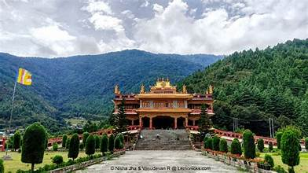

Welcome to Arunachal Pradesh
Explore the untouched beauty, rich culture, and diverse heritage of Arunachal Pradesh
Major Cities & Tourist Attractions
Itanagar – The capital city known for the majestic Ita Fort and Ganga Lake.
Tawang – Home to the famous Tawang Monastery, one of the largest Buddhist monasteries in India.


Ziro Valley – A UNESCO World Heritage Site, famous for its lush green landscapes and Apatani tribal culture.
Bomdila – A picturesque town offering panoramic views of snow-capped mountains.

Pasighat – The oldest town in Arunachal Pradesh, known for its scenic beauty along the Siang River.
Dirang – Famous for its hot water springs and apple orchards.

Beaches, Lakes & Natural Beauty

Sela Pass – A breathtaking high-altitude mountain pass that remains snow-covered most of the year.
Nuranang Falls – A spectacular waterfall located near Tawang, offering mesmerizing views.

Madhuri Lake (Sangestar Tso) – A pristine lake surrounded by snow-clad mountains.
Mechuka Valley – A hidden paradise known for its picturesque landscapes and ancient monasteries.
Temples, Monasteries & Religious Sites

Tawang Monastery – The largest Buddhist monastery in India, located amidst serene mountains.
Gompa Monastery – A peaceful Buddhist site offering panoramic views of Itanagar.

Parashuram Kund – A sacred Hindu pilgrimage site where devotees take a holy dip.
Golden Pagoda, Namsai – A stunning Burmese-style Buddhist pagoda reflecting spiritual grace.
Historical Monuments & Heritage
Malinithan Temple – An ancient archaeological site with intricately carved structures.
Ita Fort – An ancient fort built with stone blocks, showcasing the rich history of Arunachal Pradesh.
Bhismaknagar Fort – A historical site representing the glorious past of Arunachal Pradesh.